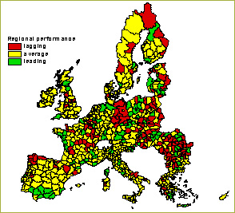

Regions in Europe
|
Many regions will need extra policy attention regarding future socio-economic developments. Especially regions with a high current share of agricultural employment might face problems finding alternative employment for the labour surplus that arises from the restructuring process. Especially in the eastern and southern parts of Europe socio economic problems may arise. To illustrate which regions are potentially affected a combination of maps with overall economic development and potential labour surplus was made. A combination of these maps results in a regional overview of regions facing problems absorbing this extra labour. Contributions from axis one (competitiveness) and especially axis three (diversification) of the Second Pillar of the Common Agriculture measures will contribute to the needs of the socio-economic lagging regions. In general the importance of the agricultural sector declines in terms of contribution to GDP, employment and income. Whether this might lead to unemployment, lower wages or depopulation in some regions is dependent on the opportunities outside the agricultural sector. In this section we identify a regional typology that identifies regions that might become in trouble in the future. We focus on two effects: |
In this study we use the following proxies for these effects:
These two criteria lead to the following regional typologies
A) Absorption capacity

Figure 1 - Leading and Lagging Regions in terms of
employment growth
Leading and lagging regions are defined according to their historical performance
since 1990. The criteria ‘leading’ or ‘lagging’ are
calculated relative to the national average employment growth rate since 1990.
The absorption capacity is the same for the different scenarios.
Figure 2 - Importance of Agriculture in 2001
Agriculture contributes significantly to regional GDP in southern Spain and
Portugal, in many regions in South-Eastern Europe (Bulgaria, Romania and Greece)
as well as in most Baltic countries. In Central Europe agriculture plays only
a minor role.
Figure 3 - Change in Agricultural Share of GDP, Global
Economy
In the Global Economy scenario there is a strong decline in the share of agriculture
in GDP. The decline is much more pronounced than in the regional communities
scenario (see, next graph). The decline is lowest in the central part of Europe
and highest along the borders of the EU (Eastern Europe and parts of Southern
and Northern Europe).
Figure 4 - Change in Agricultural Share of GDP, Regional
Communities
Figure 5 - Regional clusters, Global Economy
In Eastern and Southern Europe many regions might have problems to cope with
the decline of agriculture in their region.
Figure 6 - Regional clusters, Regional Communities
Like in the Global economy scenario many of the regions that might have problems to cope with the decline of agriculture in their region are regions in Eastern and Southern Europe. However, the problems are less severe in the regional communities scenario.